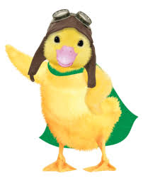

(edit text) Ming-Ming Duckling (voiced by Danica Lee)[15] is an overconfident duckling and the youngest of the three.[14] As a superhero, she wears a leather pilot's helmet with goggles and a green cape. Unlike the other Wonder Pets, she can fly and speak "bird," allowing her to connect with other birds that the Wonder Pets encounter. Ming-Ming often provides comic relief in the show, and is the Wonder Pet mostly likely to use irony and mild sarcasm. Her family comes from a petting zoo in Kalamazoo, Michigan, and she visits them on occasion. She speaks with a prominent rhotacism, pronouncing "r" sounds as "w" (as in her catchphrase "This is Se-wious!").